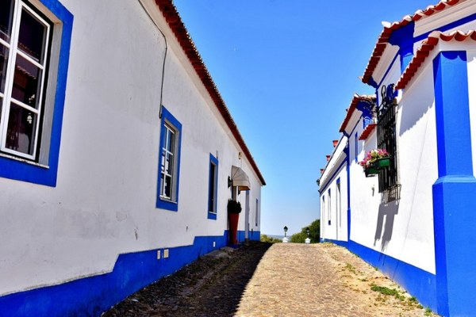

Localização
O Alentejo
mesmo à porta.
Em Montemor-o-Novo, a 3 km do centro.

Explora Montemor-o-Novo
Sair para descobrir.
Voltar para ficar.
Subir ao castelo, percorrer as ruas, descobrir o património e escolher onde parar à mesa. Montemor-o-Novo também faz parte da estadia.
Um lugar para explorar.
O portal Visit Montemor-o-Novo reúne propostas de património, cultura, gastronomia e experiências para preparar os vossos dias.
Descobrir no Visit Montemor-o-Novo ↗︎Portal de turismo · abre numa nova janela.
Nacional 2 · Montemor-o-Novo
Dois dias no coração
do Alentejo.
Façam de Montemor-o-Novo uma pausa de duas noites na viagem pela Nacional 2. Um dia para descobrir Montemor. Outro para passear por Évora. E a mesma casa para regressar ao fim do dia.
Estadia mínima de 2 noites. Em algumas datas, o mínimo pode ser superior; confirmem no calendário.
Montemor-o-Novo
O castelo, as ruas e a chegada ao Monte.
Évora
Um dia na cidade. O regresso à casa.
Ver a sugestão de dois dias
A casa como ponto de partida e de regresso
Dia 1 · Conhecer Montemor.
Cheguem a Montemor-o-Novo durante o dia. Subam ao castelo, percorram as ruas e façam uma pausa para almoçar. A entrada na casa é a partir das 16h: guardem o fim da tarde para a piscina ou o alpendre.
Primeira noite no Monte Casa Branca.
Preparar o dia com o Visit Montemor-o-Novo ↗︎Dia 2 · Descobrir Évora.
Depois do pequeno-almoço na casa, saiam para Évora. Passeiem pelo centro histórico, descubram o Templo Romano e deixem tempo para a mesa e para as ruas. Ao fim da tarde, regressem ao Monte para a segunda noite.
Segunda noite na mesma casa, sem mudar de base.
Explorar Évora ↗︎Na manhã seguinte, saída até às 11h e viagem à vossa medida. Esta é uma sugestão livre de passeio; as visitas e refeições são organizadas por vocês.
Para quem leva o passaporte N2: o Posto de Turismo de Montemor-o-Novo está identificado como local onde carimbar.
Montemor-o-Novo na Rota N2 ↗︎Por perto
Para sair.
E voltar.
Uma base no Alentejo para os vossos dias, dentro e fora de casa.
- Montemor-o-Novo
- 3 km
- Évora
- 25 min
- Lisboa
- 1 h
- Comporta
- 50 min
- Alqueva
- 1 h
Antes de chegar
As indicações,
pela mão do Diogo.
Antes da entrada, recebem por WhatsApp as indicações para chegar e o código da caixa da chave.
Falar com o Diogo →